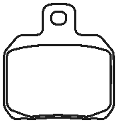

Specifications
General Specifications
Service Data
Specifications describe the closest matching model year. Confirm variant-specific equipment and service limits against the owner's manual.

FA26651.5 × 54.5 × 7.5 mmEBC shape badges show the actual pad diagram, code and published dimensions. Diagrams reproduced with written permission from EBC.
Torque Specifications
A verified model-specific torque table is not available for this fitment entry. Use the workshop manual for fastener torque values.
Frequently Asked Questions
How much horsepower (BHP) does the RSV4-RR 1000 make?
The Aprilia RSV4-RR 1000 is rated at 217 hp @ 13,000 rpm.
What is the torque of the Aprilia RSV4-RR 1000?
Manufacturer-claimed peak torque is 125 Nm @ 10,500 rpm.
What is the engine displacement of the Aprilia RSV4-RR 1000?
The Aprilia RSV4-RR 1000 is listed with a 1000 cc engine.
What is the seat height of the Aprilia RSV4-RR 1000?
The seat height is listed as 845 mm. Seat width and suspension sag also affect reach.
How much does the Aprilia RSV4-RR 1000 weigh?
The kerb weight is listed as 202 kg.
What is the power-to-weight ratio of the Aprilia RSV4-RR 1000?
Using the listed 217 hp and 202 kg, the calculated ratio is about 1,074 hp per tonne (0.80 kW/kg).
Is the Aprilia RSV4-RR 1000 suitable for beginners?
It falls outside the site's beginner shortlist criteria: 217 hp @ 13,000 rpm is above the 50 hp limit; 202 kg is above the 200 kg limit; 845 mm is above the 800 mm seat limit. The criteria are 50 hp or less, 200 kg or less, an 800 mm seat or lower, and a non-sport, non-competition category.
Is the Aprilia RSV4-RR 1000 A2-legal?
On the listed figures it exceeds the European A2 limits: about 161.8 kW and 0.80 kW/kg (limits: 35 kW and 0.2 kW/kg). A restricted version may be available; check local approval.
Is the Aprilia RSV4-RR 1000 suitable for shorter riders?
The seat is listed at 845 mm, which is very tall by the site's seat-height bands (760 mm or lower low, 761–800 mm moderate, 801–830 mm tall, above 830 mm very tall). Seat width, suspension sag and rider inseam also affect reach.
What is the fuel capacity of the Aprilia RSV4-RR 1000?
Fuel capacity is listed as 18.5 L.
What tyres does the RSV4-RR 1000 use?
Tyre sizes are listed as 120/70-ZR17 front, 200/55-ZR17 rear.
What suspension does the Aprilia RSV4-RR 1000 use?
Front: Sachs fork 43mm stanchions, adjustable compression and rebound, 127 mm (5.0 inches). Rear: ON Sachs monoshock adjustable in: hydraulic compression and rebound damping and spring pre-load, 130 mm (5.1 inches).
What brakes does the Aprilia RSV4-RR 1000 use?
Front: Double disc. ABS. Ø 330 mm floating double disc with aluminium flange Brembo STYLEMA® 4-piston mono-block radial calipers Radial pump and metal braid brake pipe-. Rear: Single disc. ABS. Brembo Ø 32 mm 2 isolated piston caliper pump with integrated tank and metal braid pipp.
What is the service interval for the Aprilia RSV4-RR 1000?
The listed service interval is Every 10,000 km (6,200 miles). Confirm the schedule for your market and model year.
What brake pads does the RSV4-RR 1000 use?
Front: SBS 901HS. Rear: EBC FA266 · SBS 730LS. These are pad-shape references; confirm the compound and exact model year before ordering.
What spark plug does the RSV4-RR 1000 use?
The listed spark plug is NGK CR9EKB. Confirm the gap and heat range for your model year.
What chain does the RSV4-RR 1000 use?
The listed chain or final drive is 525 pitch, 110 links. Confirm the pitch, link count and adjustment procedure for your model year.
What is the engine oil capacity of the Aprilia RSV4-RR 1000?
Engine oil capacity is 4.1 L and the recommended grade is 5W-40. Confirm the exact fill procedure in the owner's or workshop manual.
What fork oil does the Aprilia RSV4-RR 1000 use?
The listed fork oil specification is SAE 10W. Confirm the fill procedure in the workshop manual.
Specifications are manufacturer-claimed and can vary by model year and market. Confirm service limits and torque values against the owner's or workshop manual. Data updated 2026-11-22.